| 组件 | 支持版本 | 例中使用 | |
|---|---|---|---|
| 硬件部分 | S7-1200 各型号CPU | V4版本及以上 | 例中使用：S7-1217C V4.4版本 |
| 软件部分 | TIA Portal STEP 7 Basic/Professional | V13及以上 | 例中使用：TIA Portal STEP7 V16 Professional |
SIMATIC NET |
SIMATIC NET V12 及以上 | 例中使用： SIMATIC NET V16 |
 这种组态方式可以实现 OPC UA 客户端通过 SIMATIC NET 访问 S7-1200 CPU 优化的数据块，要求：
这种组态方式可以实现 OPC UA 客户端通过 SIMATIC NET 访问 S7-1200 CPU 优化的数据块，要求：
1. 通信双方站点必须在同一项目内组态
2. S7连接伙伴方必须设置为指定的伙伴
3. 软件版本要求见表1
如果不满足其中任意条件，则只能实现 OPC UA 客户端 或者 OPC DA 客户端通过 SIMATIC NET 访问 S7-1200 CPU 的非优化数据块，具体参见链接：STEP 7 组态、TIA PORTAL组态、PC ACCESS组态。
具体步骤可参考下文描述。
1.新建项目PLC站点并设置IP地址
使用 TIA Portal软件，创建S7-1200 CPU版本为V4.4的站点，如图1所示。
 -
-
图1.添加新设备
为CPU分配新子网并设置IP地址，如图2所示。
 -
-
图2.设置子网以及IP
2.新建全局DB块并设置属性
新建全局DB “数据块_1 DB1”将其重命名为"ABC"，如图3所示（DB块属性优化/非优化均可）。
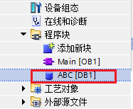-
图3.新建全局DB块
双击打开DB1，建立DB块变量，并设置初始值，下图中因为是优化的DB块，所以各变量没有绝对地址，只有符号名，如图4所示。
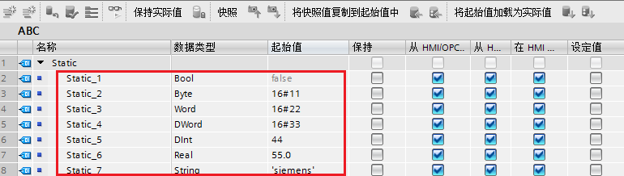-
图4.新建DB块内变量
1.新建PC 站点
在同一项目中通过“添加新设备”→“PC系统”→“常规PC” 插入一个PC站，PC站名称为“PC station”，图5所示。
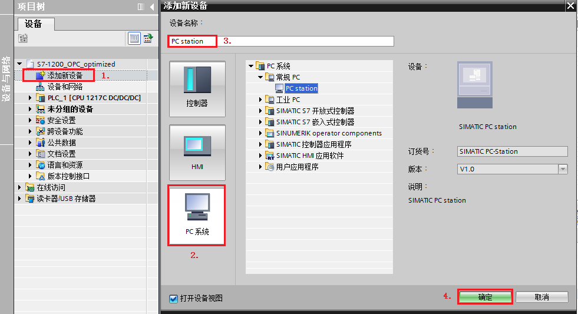-
图5.添加PC Station
双击项目树“设备组态”即可进入PC Station硬件组态界面，从右侧“硬件目录”添加相关组件：
2.设置“常规IE” IP地址
选择"常规IE"，在其属性对话框内找到“以太网地址”将接口连接到之前S7-1200建立的子网“PN/IE_1”，并设置IP地址，如图7所示。
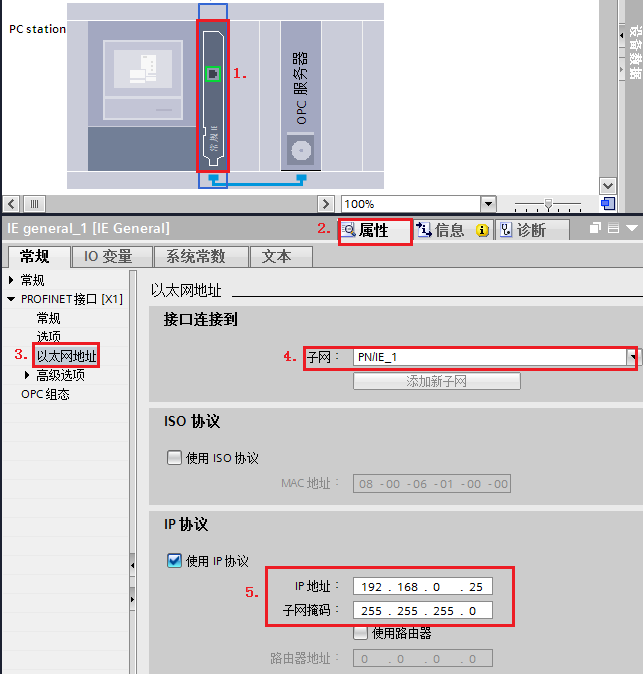 注意，上图中设置的IP地址是最终作为OPC UA服务器的电脑的IP，如图8所示。
注意，上图中设置的IP地址是最终作为OPC UA服务器的电脑的IP，如图8所示。
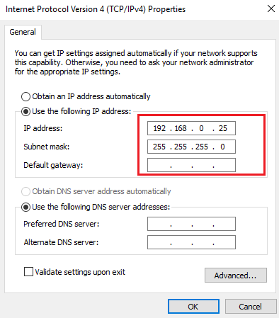
图8.计算机以太网地址
3.设置"OPC服务器" 参数
选择“OPC 服务器”，打开其“属性”对话框，选择“S7”→“OPC 符号”→“全部”，如图9所示。
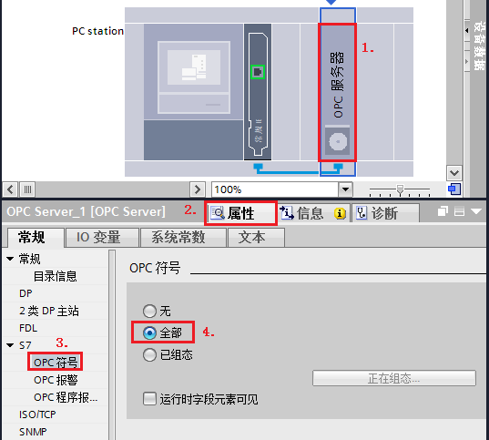
图9.设置OPC 符号属性
 注意！选择"OPC服务器"→右键→选中"更改设备"，可以选择其他版本OPC服务器。
注意！选择"OPC服务器"→右键→选中"更改设备"，可以选择其他版本OPC服务器。
4. 配置网络连接
通过点击“网络视图”的图标。进入网络配置，然后在网络视图设置连接，添加S7连接。如图10所示。
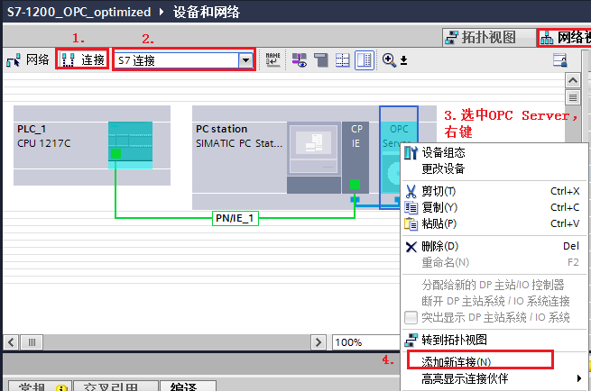
图10.添加S7连接_1
在弹出的“添加新连接”对话框内。确认连接类型为“S7连接”后，选择S7-1200站点 “PLC_1”，点击“添加”，然后点击“关闭”，如图11所示。
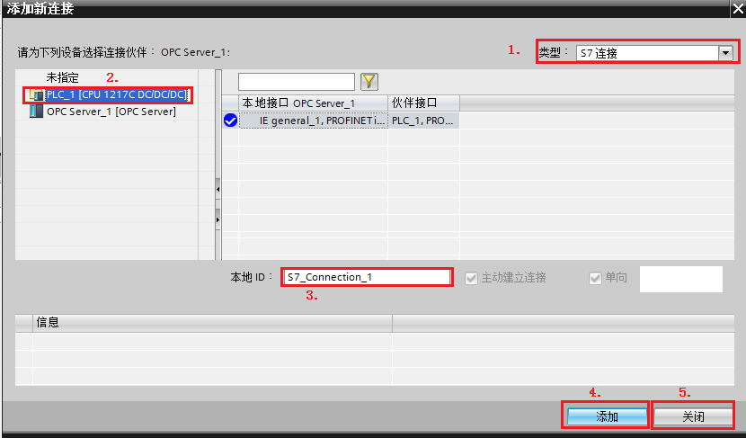
图11.添加S7连接_2
设置完毕以后，可以看到在S7-1200与PC Station之间已经建立S7连接，可以找到该连接查看其属性，因为是指定伙伴的S7连接，连接相关参数会自行匹配，见表2所示。
表2.S7 Connection 连接参数| 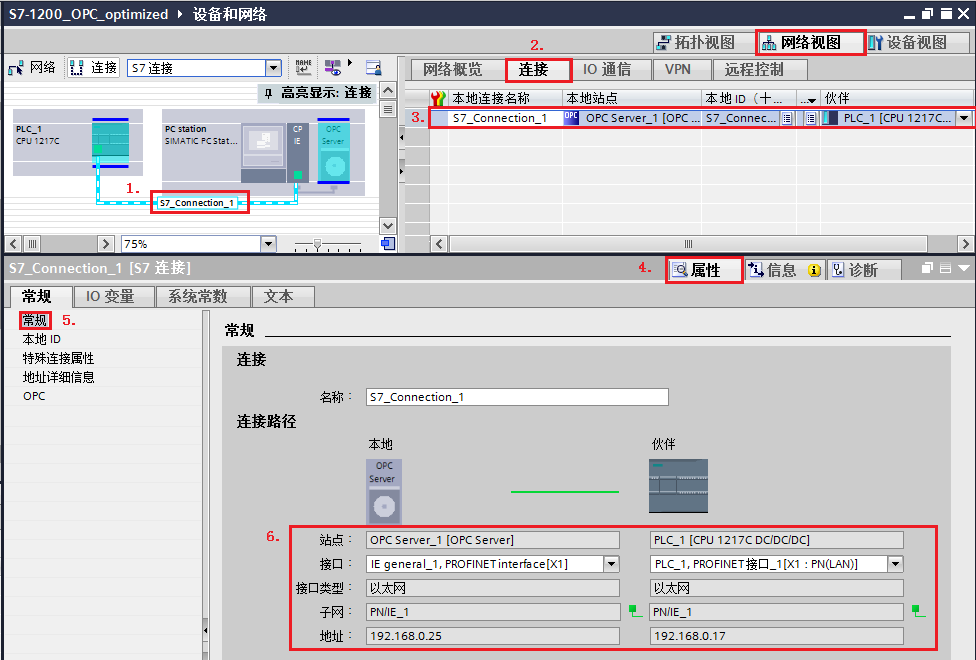 |
|---|
| 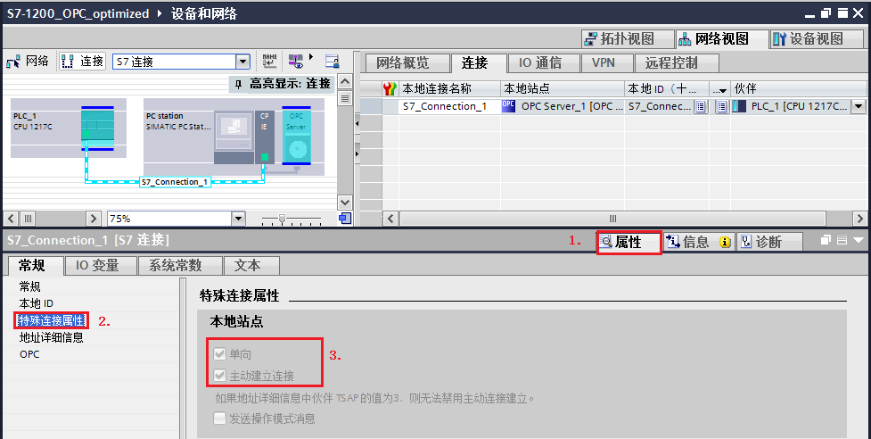 |
| 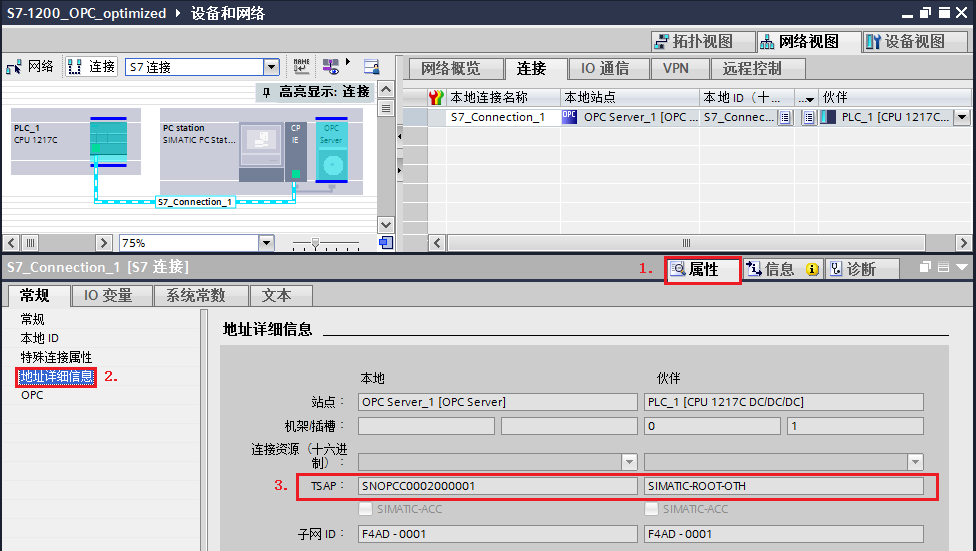 |
连接建立成功后，编译，并且将当前项目保存。分别将PLC程序与PC Station组态下载。PLC下载程序此处不再赘述，下面介绍PC Station的下载步骤。
5. PC Station组态下载
在TIA Protal “设备视图”内。选择“PC Station 站点”，在其属性对话框内，“SIMATIC PC Station ” →“XDB组态” →勾选“生成XDB文件”，并点击“浏览”设置文件存储路径。
路径设置完毕后，点击软件上方的"编译"按钮。就可以在设置路径内保存该XDB文件。 如图12所示。
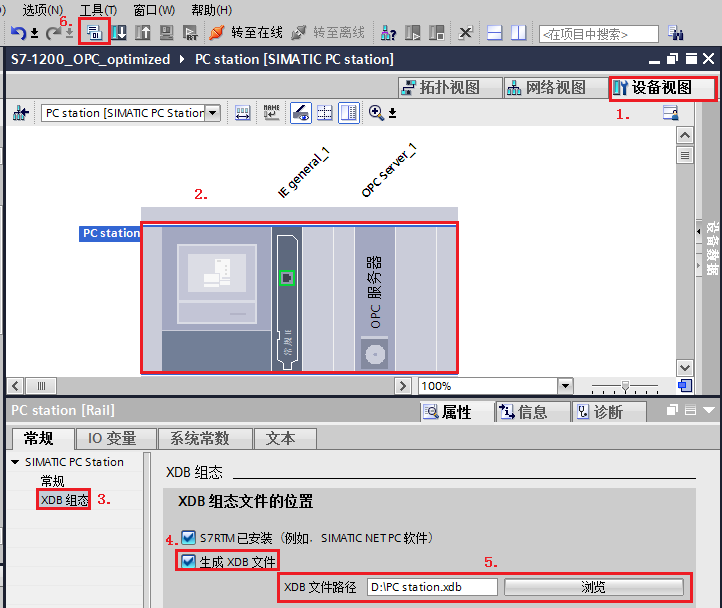
图12.生成XDB文件
将生成的XDB文件导入至"Station Configurator"内，具体步骤见表3。
表3.导入XDB文件| (1).双击桌面"Station Configurator"快捷方式打开""Station Configurator Editor"对话框 | 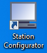 |
| (2).点击右图中"Import Station"按钮，选择路径，导入图12保存的XDB文件 | 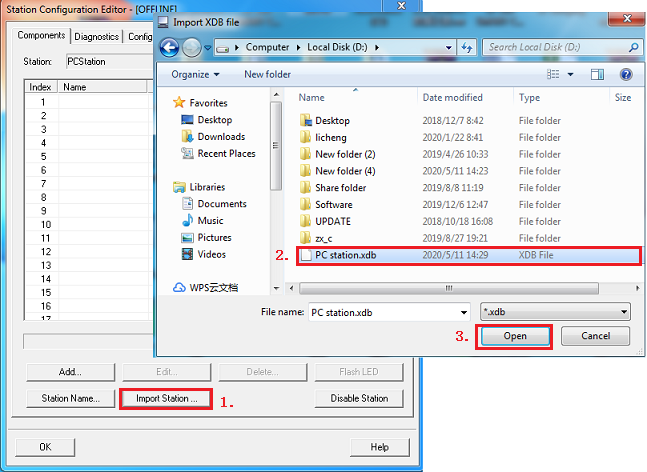 |
| (3).提示信息，点击"OK"即可 | 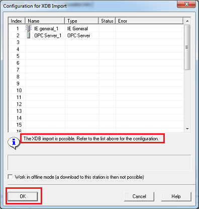 |
| (4).导入成功，并且可以看到"IE general"与"OPC Server"均处于Run，并且Conn状态正常。 | 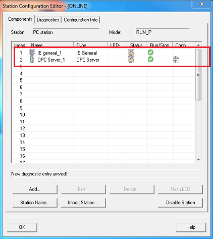 |
到这里，PC Station的下载就结束了。
1.添加OPC UA Server站点
1.点击电脑左下角的"Start"→"All Programs"→"Siemens Automation"→"SIMATIC"→"SIMATIC NET"→"OPC Scout V10"(或者直接在Start里搜索 OPC Scout V10)，启动OPC Scout V10。如图13所示。

图13.启动OPC Scout V10
打开OPC Scout V10，在 Server explorer窗口，查找UA server→Local UA Server→OPC.simaticNET.S7OPT，找到本地UA服务器，如图14所示。
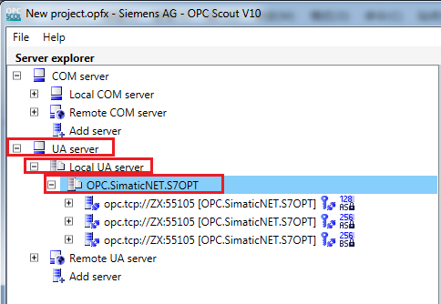
图14.添加OPC UA 服务器_1
此处以第二种加密算法为例，连接UA 服务器，双击该服务器，在弹出的“User authentication change”对话框内设置如图15所示。
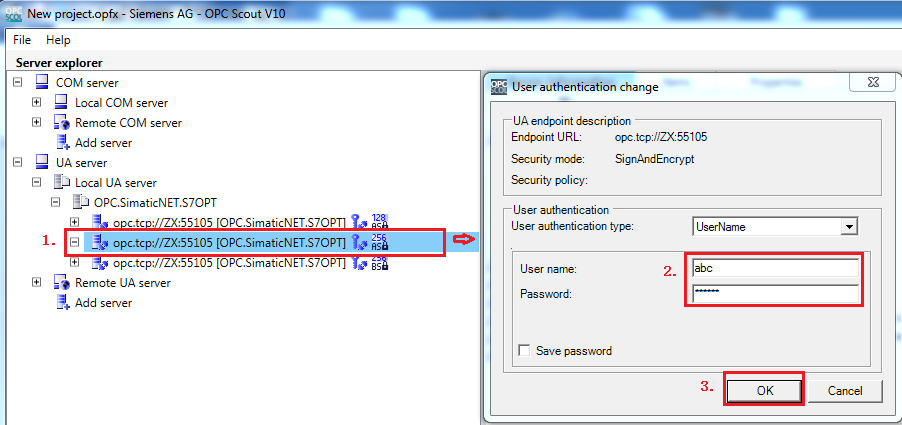
图15.添加OPC UA 服务器_2
 注意！上图中步骤2的用户名和密码为本计算机登陆的用户名和密码。
注意！上图中步骤2的用户名和密码为本计算机登陆的用户名和密码。
2.访问OPC UA Server数据
正常连接服务器后，查找“Objects”→“SYM”→“S7-1200 station_1 ”→“PLC_1”，找到S7-1200里创建的DB块变量，然后将其拖拽至右下方“Data View 1”，点击“Monitoring On”监视，如果需要写操作也可以直接在“New Value”处填写新值，然后点击“Write”按钮，即可执行写操作，如图16所示。
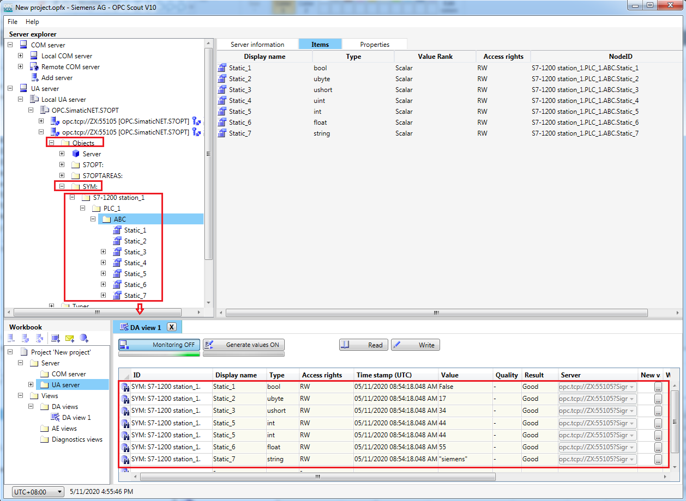
图16.访问 UA server数据
 1. 如上文图15所示，为什么必须经过用户登录才能进行数据访问？
1. 如上文图15所示，为什么必须经过用户登录才能进行数据访问？
是否需要用户登录取决于 SIMATIC NET的OPC 服务器的安全策略内的"登录设置"参数。
用户可以在电脑左下角的"Start"→"All Programs"→"Siemens Automation"→"SIMATIC"→"SIMATIC NET"→"Communication Settings"(或者直接在Start里搜索 Communication Settings)，启动Communication Settings。
如图17所示，确认"OPC 设置"→"OPC协议选择"→"S7 已优化"→"登录设置"→"允许匿名登录到OPC UA服务器"是否勾选。
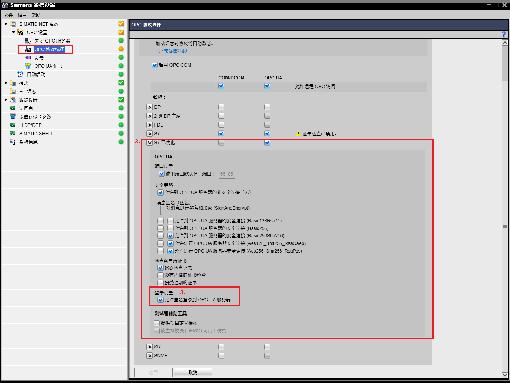
图17.Communication Settings设置
如果勾选"允许匿名登录到OPC UA服务器"，则在连接服务器时会出现匿名访问的选项，如下图所示，此时不需要用户登录就可以访问服务器。但是如果需要用户登录，则登录锁使用的用户名与密码为本计算机登陆的用户名和密码。
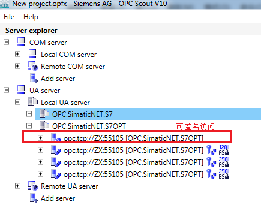
图18.OPC UA服务器登录权限
 2. 通信正常时，某些变量突然无法正常访问？
2. 通信正常时，某些变量突然无法正常访问？
用户在运行过程中对原有变量修改变量名称、数据类型，对原有的DB块修改DB号，以及后期增加的变量，均无法正常访问（虽然已经设置OPC符号为全部（如上图9所示））。解决方法需要重新编译导入XDB文件。